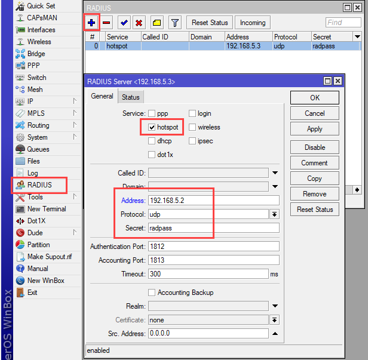
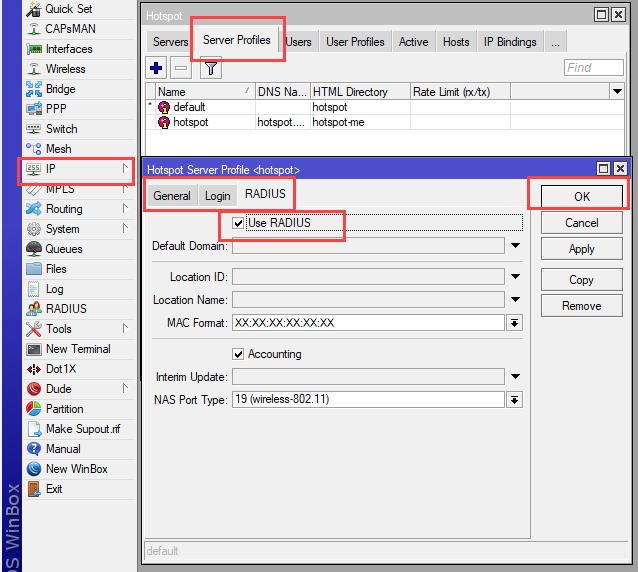

Tutorial Konfiguasi mikrotik feat freeradius
Login ke mikrotik menggunakan Winbox.
Klik RADIUS pada menu bagian kiri, kemudian pada jendela RADIUS klik tanda +. Akan muncul jendela RADIUS Server. Isikan parameter seperti pada gambar dibawah ini.

Centang hotspot
Address = IP RADIUS SERVER
Protocol = udp
Secret = password freeradius pada client.conf
Lalu klik OK
Selanjutnya Klik IP --> Hotspot. Pada jendela Hotspot klik tab Server Profile. Pilih salah salah satu profile hotspot kemudian edit, kemudian akan muncul tampilan Hotspot Server Profile, klik tab RADIUS. Centang Use Radius kemudian klik OK.

DONE FreeRadius siap digunakan